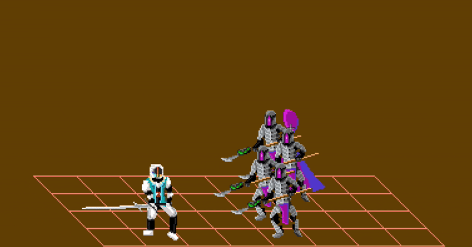
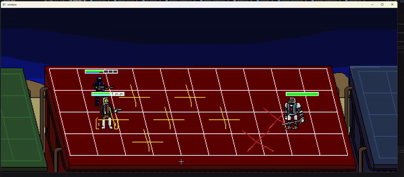

Ventius Smash
Ventius Smash is a simple 2D grid-based game based on an old LEGO Flash game, Spinjitzu Smash. It is designed entirely in Python, using the OpenCV, CVZone, and PlaySound3 libraries, among many others for more standard tools (e.g., multithreading, JSON parsing). The art is all my own, designed in an open-source pixel art editor named, Piskel, using characters from personal writing projects.
The project has two versions. The first is the original, which was designed, built, refactored, and thoroughly documented within a three day sprint; it is fully open-source and is public on my GitHub. This was done in late 2025 / early 2026. The second version is larger-scale work that's been in-progress since early September 2026. I've got the ambitious goal of publishing it at some point, so I'm keeping it closed source, for now. It retraces a lot of the same steps but is much more suited towards being extensible and maintainable.
This project is listed as Simple Grid-Based 2D Game on my resume and curriculum vitae. It has not been used for any coursework.
Language(s): Python (with OpenCV, CVZone, and PlaySound3)
Source(s): Original three-day sprint draft (GitHub)